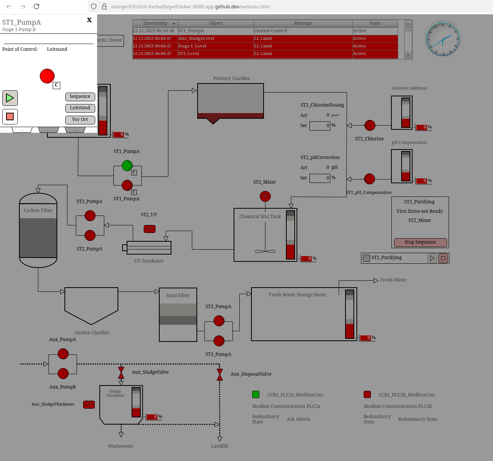

Lab Environment
Overview
This workshop uses a realistic OT network lab environment built with Containerlab. The lab simulates a typical industrial facility with multiple security zones, PLCs, network segmentation, and monitoring points that can mirror real-world deployments.
This lab is vendor-neutral and uses only open-source and free tools. All components run in containers, allowing for rapid deployment, experimentation, and reset capabilities during hands-on exercises.

Getting Started
Starting the Lab Environment
The lab runs in a development container with all required tools pre-installed. Choose one option:
Option 1: GitHub Codespaces (Recommended)
GitHub Codespaces provides a cloud-based environment accessible through your browser. No local installation required.
- Go to github.com/narrowin-labs/ot-lab
- Click "Codespaces Open in Codespaces"
- Wait 5-10 minutes for the initial setup (first-time only)
Initial Setup Time: The first time you create a Codespace, it needs to download and configure all container images. This takes approximately 5-10 minutes. You'll know the setup is complete when you see the docker images list in your terminal:
❯ docker images
REPOSITORY TAG IMAGE ID CREATED SIZE
ghcr.io/narrowin/ot-sec-lab-hmi latest 96b8774dc7e4 5 days ago 731MB
ghcr.io/narrowin/ot-sec-lab-plc latest 9f7db1f2f47d 7 days ago 333MB
ghcr.io/kaelemc/wireshark-vnc-docker latest 4cebbe954b93 3 months ago 554MB
ghcr.io/narrowin/ot-sec-lab-linux latest 643864c992c6 4 months ago 908MB
ghcr.io/narrowin/vrnetlab_mikrotik_routeros 7.18 50052d2a79a1 6 months ago 1.01GB
ghcr.io/siemens/ghostwire latest 18664310d22f 15 months ago 36.5MB
ghcr.io/siemens/packetflix latest 6bed7a0d2a95 20 months ago 122MB
Subsequent starts will be much faster (under 1 minute).
Documentation: docs.github.com/codespaces
Starting a Lab
Navigate to the Containerlab extension on the left, right-click on one of the two labs and select "Edit topology (TopoViewer)":

Click the play button to initiate the deploy of the lab. This starts the lab and you need to wait 3-5 minutes for the lab to be fully operational. Once all nodes are green:

run in the terminal: scripts/lab-test.py ot-sec-flat or scripts/lab-test.py ot-sec-segmented depending on what you started. When all check of the test script are green you are ready to go.
Water Treatment Frontend
Navigate to the Ports section in the lower panel, right-click HMI WeChromium bVNC or ABB 800xA HMI Interface and select Open in Browser.

Start experimenting with your OT equipment (: 
Viewing Traffic with Wireshark
Once the lab is running, you can effortlessly monitor ANY communication with live packet captures. The easiest is to right-click on a link in the TopoViewer and select on which side of the link you want to capture. This opens a Wireshark inside VS Code, allowing you to analyze your traffic.

The first time you will be asked by VS Code if you want to open with Edgeshark: select yes.

On first start it can happen that the new created window starts with an error. Just close it and try again then.
Quick Reference
Understanding the Management Network
The lab has two separate network layers:
Management Layer (192.168.100.0/24)
- Created automatically by Containerlab
- Lets you access containers from your host
- Use these IPs to SSH or open web interfaces
- This simulates out-of-band management in real networks
Lab Topology Layer (10.0.0.0/8)
- The actual network you are testing
- How containers communicate with each other
- Where your network segmentation and security policies apply
Your Host Machine / Browser
|
| Exported Ports
| :5800 -> HMI WebVNC (chromium browser inside lab)
| :8080 -> ABB 800xA HMI (10.40.0.11:8080)
| :8000 -> MkDocs Documentation
|
| Direct access via Docker bridge
|
+----v--------------------------------------------+
| Management Network: 192.168.100.0/24 |
| (Containerlab creates this automatically) |
| |
| .11 .12 .13 .52 .53 .57 |
| [gw] [sw] [sw] [jump] [plc] [abb] |
+----+------+-------+--------+--------+------+----+
| | | | | |
| | | | | |
+----+------+-------+--------+--------+------+----+
| Lab Topology Networks |
| 10.10.0.0/24, 10.20.0.0/24, 10.30.0.0/24, etc. |
| (Your actual network under test) |
+-------------------------------------------------+
When you SSH to a device using 192.168.100.x, you are accessing it through the management layer, not through the lab topology. This mirrors how real industrial networks use separate management networks.
PLC Web Interfaces
For a complete list of PLC web interfaces and their URLs, see the Cheatsheet.
Accessing PLC Web Interfaces in Codespaces
When running in GitHub Codespaces, all PLC web interfaces are accessible through the integrated Chromium HMI WebVNC browser:
- Navigate to the Ports panel in VS Code (bottom panel)
- Find the HMI WeChromium bVNC (5800) port
- Right-click and select Open in Browser
- A browser window opens with a browser inside showing the lab documentation
- Click on any PLC link in the documentation to open the web interface directly
This approach allows you to access all PLC web interfaces without individual port forwarding, and the browser runs inside the lab network with direct access to all devices.
Alternative Direct Port Access:
Individual ports can also be accessed directly through port forwarding:
- Port 8080 forwards to the ABB 800xA HMI interface (10.40.0.11:8080)
- Click the globe icon next to any forwarded port in the Ports panel
- Forwarded ports are private by default (GitHub authentication required)
Default Credentials
All lab devices use standardized credentials:
Username: admin
Password: admin
First 5 Minutes
- SSH to the jumphost:
ssh admin@192.168.100.52 - Ping a PLC (VLAN 10):
ping 10.10.0.11 - Inspect deployed lab:
sudo containerlab inspect -t ot-sec-segmented.clab.yml - Optional: Open a PLC web UI:
http://10.10.0.11:8080(if enabled) - Confirm you can SSH to a PLC:
ssh admin@192.168.100.53
Lab Architecture
Network Topology
The lab implements a defense-in-depth architecture with the following components:
Network Devices
| Device | Role | Function |
|---|---|---|
gw-firewall |
Gateway Firewall | IT/OT boundary protection and routing |
sw-dist |
Distribution Switch | Core OT network aggregation |
sw-acc1 |
Access Switch 1 | Zone-level switching for VLANs 10/20/30 |
sw-acc2 |
Access Switch 2 | Zone-level switching for VLANs 10/40/50 |
Operational Technology Assets
| Device | Vendor | Location | Function |
|---|---|---|---|
wago-plc2a-vlan10 |
WAGO | VLAN 10 (Hygiene) | PLC |
wago-plc2b-vlan10 |
WAGO | VLAN 10 (Hygiene) | PLC |
ctrlx-plc3-vlan20 |
Bosch Rexroth (ctrlX) | VLAN 20 (Process) | PLC |
schneider-plc4-vlan30 |
Schneider Electric | VLAN 30 (Disposal) | PLC |
abb-800xa-vlan40 |
ABB | VLAN 40 (Control Room) | HMI/Control |
dell-ews1-vlan50 |
Dell Engineering Workstation | VLAN 50 (Parameterization) | EWS |
hirschmann-edge1-vlan50 |
Hirschmann Edge Gateway | VLAN 50 (Parameterization) | Edge gateway |
Support Infrastructure
| Device | Function |
|---|---|
proxmox-jumphost |
Remote access gateway in DMZ |
panasonic-toughbook-internet |
External connectivity simulation |
Security Zones and Segmentation
The lab implements IEC 62443-based security zones with defined Security Levels (SL):
| Zone | Function | Typical Assets | SL | Rationale |
|---|---|---|---|---|
| OT-DMZ | Demilitarized zone between IT and OT | Jump hosts, patch servers, update proxies, historians, remote access gateways | 2 | Protects against intentional misuse; bridges SL 1 (IT) and SL 3 (OT core) |
| OT-Operations: Hygiene | Sanitation and auxiliary systems | PLCs, valves, sensors (VLAN 10) | 3 | Safety or compliance-relevant; requires higher assurance |
| OT-Operations: Process | Core production control | Main PLCs, sensors, actuators (VLAN 20) | 2 | Core process control; protection against skilled attackers |
| OT-Engineering: Network Management | Infrastructure management | Management servers, SNMP, backup systems | 3 | Sensitive infrastructure; strong authentication required |
| OT-Engineering: Parameterization | Engineering and programming | Engineering workstations, Codesys, laptops | 2 | Limited access; focus on integrity and controlled connections |
Note: Security Level (SL) according to IEC 62443 standard
Authorized Data Flows
The lab implements controlled communication paths between zones:
| From | To | Purpose |
|---|---|---|
| Internet (IT) | OT-DMZ (Jumphost) | Remote access for engineers |
| OT-DMZ (Jumphost) | OT-Operations (Process/Control) | Engineering access to PLCs |
| OT-DMZ (Jumphost) | OT-Engineering (Network Management) | Network device management |
| OT-Engineering (Param) | OT-Operations (Process) | PLC programming and updates |
| OT-Operations (Process) | OT-Operations (Hygiene) | Inter-process communication |
Lab Components
PLC Containers
Each PLC in the lab runs CODESYS runtime and simulates a real industrial controller.
PLC Capabilities
All PLCs are containerized Ubuntu systems with:
- CODESYS Control Linux SL (IEC 61131-3-compliant SoftPLC with soft real-time properties)
- Modbus TCP, PROFINET, EtherNET/IP and OPC-UA support
- Web-based HMI (port 8080)
- SSH access for configuration
- Simulated I/O and process data
Network Configuration
| Network | Subnet | VLAN | Purpose |
|---|---|---|---|
| Hygiene (VLAN 10) | 10.10.0.0/24 |
10 | Sanitation systems |
| Process (VLAN 20) | 10.20.0.0/24 |
20 | Core production control |
| Disposal (VLAN 30) | 10.30.0.0/24 |
30 | Waste disposal systems |
| Control Room (VLAN 40) | 10.40.0.0/24 |
40 | HMI and control systems |
| Parameterization (VLAN 50) | 10.50.0.0/24 |
50 | Engineering workstations |
Network Infrastructure
All network devices run MikroTik RouterOS 7.18 in virtualized containers.
Device Capabilities
| Feature | Description |
|---|---|
| VLAN tagging | Full 802.1Q VLAN support for network segmentation |
| Port mirroring | SPAN ports for non-intrusive traffic capture |
| Firewall | Stateful packet filtering and access control |
| Routing | Inter-zone routing with policy-based forwarding |
| SNMP monitoring | Network management and monitoring integration |
| MAC management | MAC address table and security features |
Strategic Monitoring Points
| Location | Visibility | Use Case |
|---|---|---|
| Gateway firewall | OT-Internet boundary | External threats, remote access monitoring |
| Distribution switch | Inter-zone traffic | Zone-to-zone communication patterns |
| Access switches | Zone-internal traffic | Device-level communication within zones |
Support Systems
proxmox-jumphost
| Feature | Description |
|---|---|
| Role | Remote access gateway in DMZ |
| Tools | Pre-installed network tools for exercises |
| Access | SSH from your laptop; use for all commands unless stated otherwise |
Network Addressing
Management Network: 192.168.100.0/24
All lab devices are accessible via the management network.
Network Devices
| Device | Management IP | Container Name | Access |
|---|---|---|---|
| Gateway Firewall | 192.168.100.11 |
clab-ot-sec-segmented-gw-firewall |
SSH, Web |
| Distribution Switch | 192.168.100.12 |
clab-ot-sec-segmented-sw-dist |
SSH, Web |
| Access Switch 1 | 192.168.100.13 |
clab-ot-sec-segmented-sw-acc1 |
SSH, Web |
| Access Switch 2 | 192.168.100.14 |
clab-ot-sec-segmented-sw-acc2 |
SSH, Web |
Host Systems
| Device | Management IP | Container Name | Access |
|---|---|---|---|
| Internet | 192.168.100.51 |
clab-ot-sec-segmented-panasonic-toughbook-internet |
SSH |
| Jumphost | 192.168.100.52 |
clab-ot-sec-segmented-proxmox-jumphost |
SSH |
| wago-plc2a-vlan10 | 192.168.100.53 |
clab-ot-sec-segmented-wago-plc2a-vlan10 |
SSH, Web |
| wago-plc2b-vlan10 | 192.168.100.54 |
clab-ot-sec-segmented-wago-plc2b-vlan10 |
SSH, Web |
| ctrlx-plc3-vlan20 | 192.168.100.55 |
clab-ot-sec-segmented-ctrlx-plc3-vlan20 |
SSH, Web |
| schneider-plc4-vlan30 | 192.168.100.56 |
clab-ot-sec-segmented-schneider-plc4-vlan30 |
SSH, Web |
| abb-800xa-vlan40 | 192.168.100.57 |
clab-ot-sec-segmented-abb-800xa-vlan40 |
SSH, Web |
| dell-ews1-vlan50 | 192.168.100.58 |
clab-ot-sec-segmented-dell-ews1-vlan50 |
SSH |
| hirschmann-edge1-vlan50 | 192.168.100.59 |
clab-ot-sec-segmented-hirschmann-edge1-vlan50 |
Edge gateway |
VLAN 10 - Hygiene Network: 10.10.0.0/24
| Device | IP Address | Function |
|---|---|---|
| Gateway | 10.10.0.1 |
Default gateway (gw-firewall) |
| wago-plc2a-vlan10 | 10.10.0.11 |
Hygiene PLC |
| wago-plc2b-vlan10 | 10.10.0.12 |
Hygiene PLC |
VLAN 20 - Process Network: 10.20.0.0/24
| Device | IP Address | Function |
|---|---|---|
| Gateway | 10.20.0.1 |
Default gateway (gw-firewall) |
| ctrlx-plc3-vlan20 | 10.20.0.11 |
Process PLC |
VLAN 30 - Disposal Network: 10.30.0.0/24
| Device | IP Address | Function |
|---|---|---|
| Gateway | 10.30.0.1 |
Default gateway (gw-firewall) |
| schneider-plc4-vlan30 | 10.30.0.11 |
Disposal PLC |
VLAN 40 - Control Room Network: 10.40.0.0/24
| Device | IP Address | Function |
|---|---|---|
| Gateway | 10.40.0.1 |
Default gateway (gw-firewall) |
| abb-800xa-vlan40 | 10.40.0.11 |
HMI/Control system |
VLAN 50 - Parameterization Network: 10.50.0.0/24
| Device | IP Address | Function |
|---|---|---|
| Gateway | 10.50.0.1 |
Default gateway (gw-firewall) |
| dell-ews1-vlan50 | 10.50.0.11 |
Engineering workstation |
| hirschmann-edge1-vlan50 | 10.50.0.12 |
Edge gateway |
DMZ Network: 2.2.2.0/24
| Device | IP Address | Function |
|---|---|---|
| Gateway | 2.2.2.1 |
Firewall DMZ interface |
| proxmox-jumphost | 2.2.2.2 |
Remote access gateway |
Internet Simulation: 1.1.1.0/24
| Device | IP Address | Function |
|---|---|---|
| panasonic-toughbook-internet | 1.1.1.1 |
External network simulation |
| Firewall External | 1.1.1.2 |
Firewall WAN interface |
Lab Access
Connection Methods
Access via VS Code Containerlab Extension
The lab includes VS Code integration for easy device access:
- Right-click on device in Containerlab extension
- Select SSH connection
- Or use Topology Viewer: Click device, then Action → SSH
Available Tools
Network Analysis Tools
| Tool | Purpose | Usage Example |
|---|---|---|
ping |
Test network connectivity | ping 10.10.0.11 |
nmap |
Network and port scanning | nmap -sV 10.10.0.0/24 |
tcpdump |
Command-line packet capture | tcpdump -i eth0 -w capture.pcap |
arp |
Display ARP table | arp -a |
nc |
TCP/UDP client/server | nc -l 5000 |
ssh |
Remote login | ssh admin@192.168.100.53 |
Dsniff Suite
Dsniff provides tools for network auditing and penetration testing.
| Tool | Purpose | Example |
|---|---|---|
dsniff |
Capture clear-text credentials (FTP, HTTP, SMTP) | dsniff -i eth0 |
filesnarf |
Extract files from network traffic | filesnarf -i eth0 |
mailsnarf |
Reconstruct email messages | mailsnarf -i eth0 |
urlsnarf |
Log all HTTP URLs | urlsnarf -i eth0 |
arpspoof |
ARP spoofing for MITM attacks | arpspoof -i eth0 -t 10.10.0.11 10.10.0.1 |
dnsspoof |
DNS hijacking | dnsspoof -i eth0 -f hosts.txt |
macof |
Flood switch CAM table | macof -i eth0 |
tcpkill |
Terminate TCP connections | tcpkill -i eth0 host 10.10.0.11 |
tcpnice |
Slow down TCP connections | tcpnice -i eth0 host 10.10.0.11 |
Important: Enable IP forwarding for MITM attacks:
echo 1 > /proc/sys/net/ipv4/ip_forward
Workshop Lab Exercises
The hands-on exercises have been moved to a dedicated section.
The exercises cover:
- VLAN Discovery
- ARP Spoofing
- Spanning Tree Analysis
- Link Aggregation
- Remote Access Assessment
- OT Protocol Discovery
- Network Segmentation and Firewall Design
Debugging and Verification
Lab Health Check Script
The lab includes a comprehensive health check script that verifies all components are running correctly.
When to use:
- After deploying the lab for the first time
- When something seems wrong and you need to identify the issue
- Before starting exercises to ensure everything is ready
- After making configuration changes
Run the health check:
./scripts/lab-test.py ot-sec-segmented
# or for flat topology
./scripts/lab-test.py ot-sec-flat
What it checks:
The script verifies all critical lab components in organized categories:
- Infrastructure - Containerlab deployment, all containers running
- Network Devices - MikroTik switches and gateway responsiveness
- PLC Runtimes - CODESYS processes and program execution state
- Host Ports - Exposed services (8080, 5800, 1218) with source containers
- Container Ports - HTTP services on all devices
- Connectivity - Network reachability from jumphost, inter-node communication, gateway access
- Storage - Required bind mounts for PLC configurations
Understanding results:
- PASS - Component working correctly
- FAIL - Critical issue requiring attention
- WARN - Non-critical issue (no longer shown for optional components)
Common issues:
If containers show as not running:
clab inspect -t ot-sec-segmented.clab.yml
docker ps -a | grep clab-ot-sec
If connectivity tests fail, check network device status:
ssh admin@192.168.100.11 # gateway
ssh admin@192.168.100.12 # distribution switch
If PLC runtimes fail, check process status inside container:
docker exec clab-ot-sec-segmented-wago-plc2a-vlan10 pgrep -f codesyscontrol
Extension Ideas
- Advanced Monitoring
- Deploy Zeek for protocol analysis
- Set up Suricata IDS with custom rules
-
Integrate ELK stack for log aggregation
-
Security Testing
- Implement firewall rulesets
- Test network segmentation effectiveness
-
Simulate attack scenarios
-
Protocol Analysis
- Analyze additional OT protocols
- Create custom Wireshark dissectors
-
Document protocol behaviors
-
Automation
- Script deployment processes
- Automate configuration backups
- Create testing frameworks